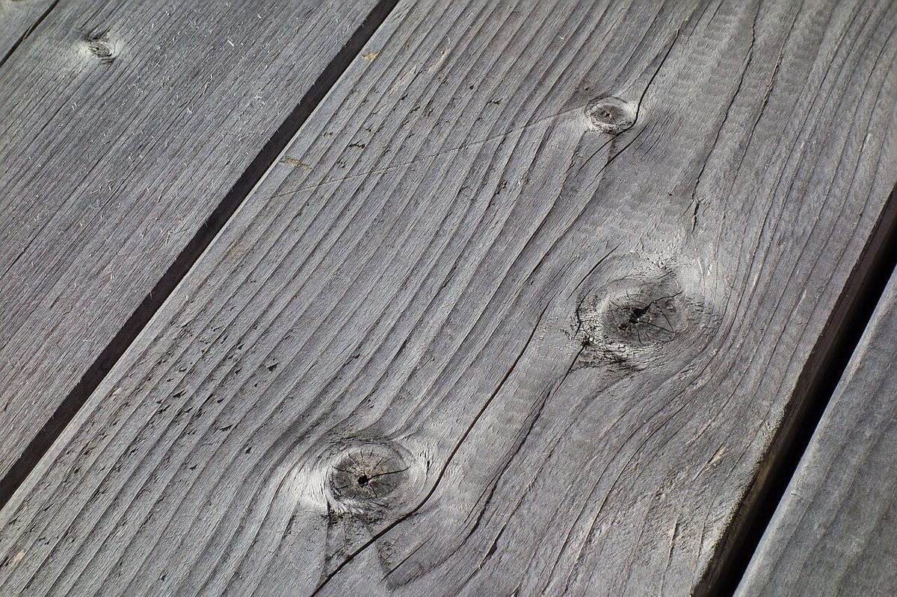
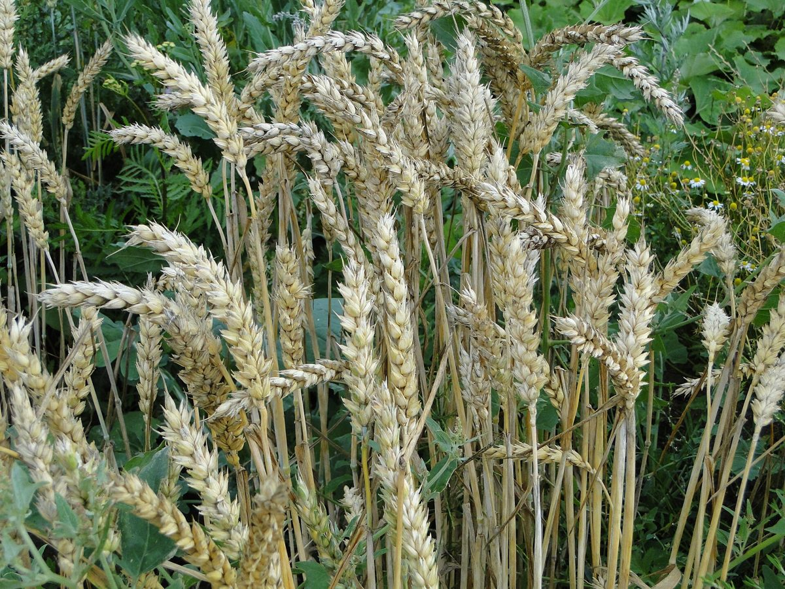

口コミ
口コミ(イメージ)
実際のお客様の声はまだありません。下の3件は、制作側の創作したイメージ例です。
以下は制作側の創作で、実在のお客様の投稿ではありません。お店の実際の様子とも関係がありません。
- イメージ例
「いつか行ってみたいな、と思っています。まずはInstagramをのぞいてみたいです。」
- イメージ例
「Instagramをのぞいてみたい。どんなお店なのか、少しずつ知りたいと思います。」
- イメージ例
「いつか行ってみたい。その前に、Instagramをのぞいてみたいと思います。」


気になったら、まずはInstagramをのぞいてみてください。